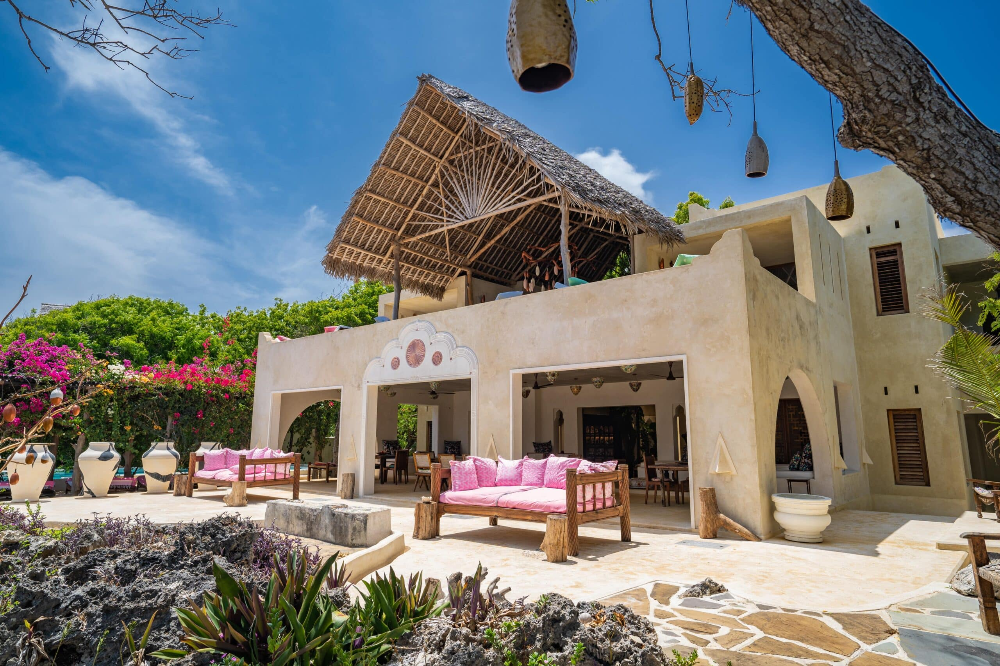

CARDAMON HOTEL

YOUR SECLUDED HOME AT KURUWITU BEACH / VIPINGO On a wild piece of land fringed by sea and dense vegetation, there was once an old,
picturesque house that has been conjured into a refined accommodation in minimalist Swahili style.Created by a Swahili architect to celebrate the beauty of the land and sea, the property has been
carefully woven around existing trees and delights with unobstruc- ted sea views.
The décor reflects the nature of the surroundings, ancient Swahili textures and shapes. Mixed with modern Afro-chic design and hearty service, guests experience here barefoot luxury at its best.
The entire complex faces the glistening turquoise waters of the Indian Ocean, hose colours are reflected in the lovingly selected decorative elements.
A special highlight is the lounge on the roof terrace at the tower, from where you enjoy the colourful sunset with delicious finger food and a cool drink.
The infinity pool is just as inviting for extended sunbathing as the palm-fringed beach, which you sometimes share only with local fishermen and cheerful kids .
Eat where and when you want-that's the motto. There are no set meal times or menus. Indulge in creative dishes with an emphasis on freshly caught fish and seafood,
a wide selection of excellent wines and numerous dining options-from the main house to the pool, the garden and the fire pit to the private terrace of your suite.